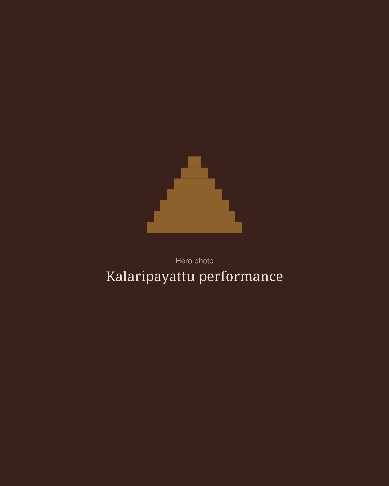
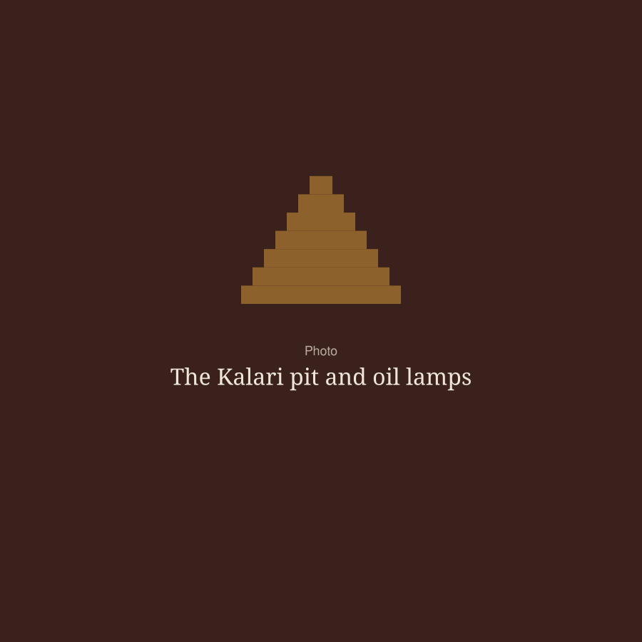

Where the warrior’s way and the healer’s art meet

Kalaripayattu training and traditional Kalari healing in Kozhikode, carried forward since 1952 by the lineage of Veerasree Sami Gurukkal.
Founded at Puthiyara, Kozhikode, in 1952.
To train, to heal, to worship
1952
The year Veerasree Sami Gurukkal opened the Kalari at Puthiyara.

Hindustan Kalari Sangham was founded at Puthiyara, Kozhikode, in 1952 by Veerasree Sami Gurukkal. For more than seven decades it has been a place to train, to heal and to worship.
Students learn Kalaripayattu, Kerala’s traditional martial art, in the earthen Kalari pit or online. Patients come for Marma Chikitsa and traditional fracture care, and the whole community gathers through the year for Vidyarambham, Navratri and Gurusmriti.
What happens at the Sangham
Train with us
Classes in the Kalari for children, women and adults, plus live online classes for students anywhere in the world.
ClassesTraditional healing
Marma Chikitsa and Ayurvedic fracture care, supported by physiotherapy, X-ray and a pharmacy at our treatment centre.
HealingOn stage
From Veera Vaibhavam at the Kumbhamela to the BRICS Games in Ahmedabad, we carry Kalaripayattu to audiences across India.
PerformancesA living lineage
Founded in 1952, our Kalari keeps alive the teachings, rituals and festivals passed down from Veerasree Sami Gurukkal.
Our lineageThrough the year
Follow us on Instagram for dates and details.
Gurusmriti
May. The annual remembrance of Veerasree Sami Gurukkal.
Navratri
Golu, chanting and cultural evenings at the Kalari.
Vidyarambham on Vijayadashami
The day new students begin their training.
Begin your Kalari journey
Message us on WhatsApp for current timings and fees. No martial-arts background needed.
Message us on WhatsApp